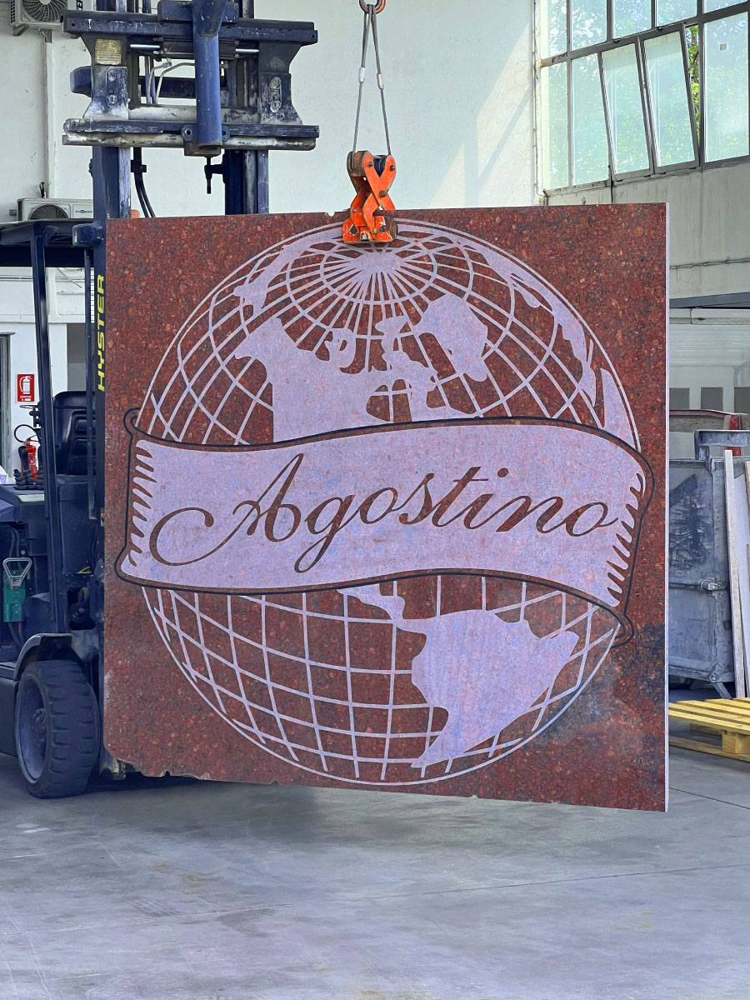
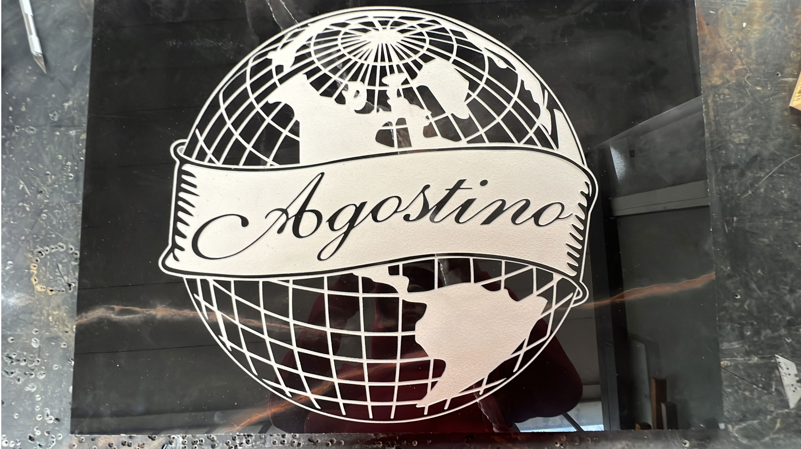
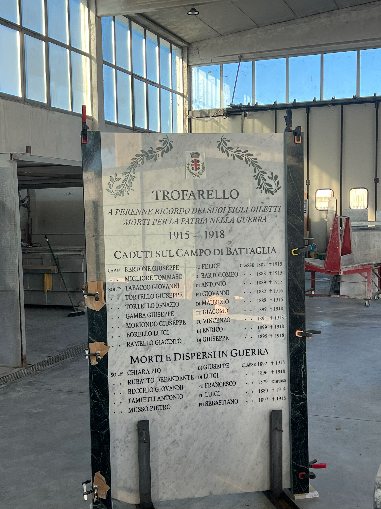

Opere Monumentali & Sculture
Progetti di grande dimensione realizzati su commissione per enti pubblici, comuni e aziende. Dalla progettazione alla installazione finale, gestione completa di opere che durano nel tempo.
Tecniche utilizzate: scultura in altorilievo, incisione profonda, verniciatura su pietra, sabbiatura selettiva per effetti texture, e installazione in quota con mezzi speciali.

Rosa dei Venti
Opera monumentale incisa su granito nero con cime alpine georeferenziate
Lastra quadrata in Granito Nero Assoluto con rosa dei venti incisa al centro e, disposti lungo i punti cardinali, i nomi e le quote di tutte le cime visibili da Sestriere. Incisione con finitura sabbiata sul disegno e lucida sullo sfondo per massimo contrasto. Opera datata 2023, destinata all' installazione in quota .

Logo Agostino su Granito Rosso
Lastra monumentale in Granito Rosso con incisione del logo aziendale "Agostino" — globo terrestre con meridiani, continenti e banner con scritta in corsivo. Lavoro di grande formato sollevato con muletto, che testimonia la scala e la complessità della lavorazione eseguita.

Logo Agostino su Piastrelle Nere
Versione in piastrella nera lucida, dettaglio incisione
Dettaglio ravvicinato della stessa incisione del logo "Agostino" realizzata su piastrella nera lucida. Il fondo a specchio esalta il contrasto con il tratto bianco dell'incisione, rendendo visibili ogni dettaglio dei meridiani, dei continenti e della scritta in carattere calligrafico.

Monumento ai Caduti — Trofarello
Lapide commemorativa Prima Guerra Mondiale in marmo bianco e verde
Grande lapide commemorativa dedicata ai caduti della Prima Guerra Mondiale del comune di Trofarello. Realizzata in marmo bianco con cornice in marmo verde , riporta incisioni di decorazioni floreali, stemma comunale e l'elenco completo dei caduti con nomi, classi e date. Lavoro di altissima precisione e profondo rispetto istituzionale.

Colonna Stuccata
Marmo Botticino
Rivestimento colonna con finte fughe, effetto antico.